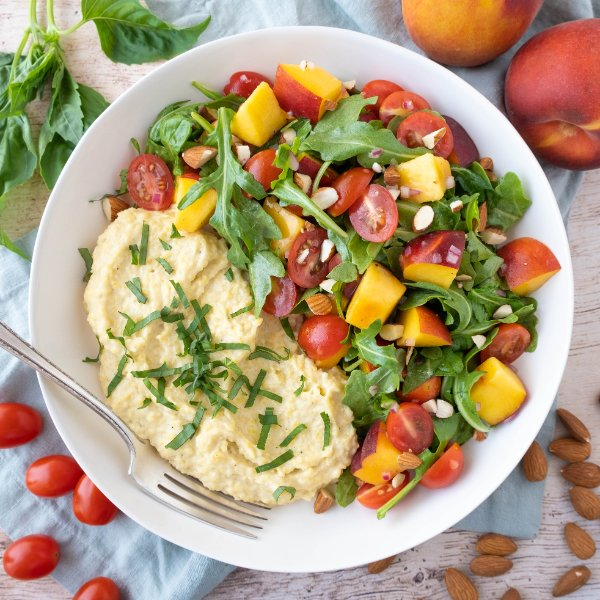

Basil-Ricotta Polenta Bowl with Peach, Tomato, Arugula & Almond Salad

Nutrition (per serving)
560.6 kcalCalories
25.6 gProtein
56.1 gCarbs
28.4 gFat
Full nutrition table
| Calories | 560.6 kcal |
| Total fat | 28.4 g |
| Saturated fat | 10.8 g |
| Trans fat | 0.5 g |
| Cholesterol | 54.2 mg |
| Sodium | 200.2 mg |
| Carbohydrates | 56.1 g |
| Fiber | 6.4 g |
| Sugars | 22.2 g |
| Protein | 25.6 g |
| Potassium | 1124.2 mg |
| Calcium | 348.2 mg |
| Iron | 4.2 mg |
| Vitamin A | 1631.3 IU |
| Vitamin C | 26.8 mg |
| Vitamin D | 10.6 IU |
Cookware
Ingredients
- ¼ cupalmonds
- 1 (5 oz) pkgbaby arugula
- 40 fl ozchicken or vegetable broth
- 1 small pkgfresh basil
- 1 pintgrape tomatoes
- 4peaches
- 1 cuppolenta (cornmeal)
- 1 (15 oz) pkgricotta cheese
- 1shallot
- apple cider vinegar
- black pepper
- Dijon mustard
- extra virgin olive oil
- honey
- salt
Steps
- In a large pot, bring broth to a boil. Reduce heat to low and gradually add polenta in a thin steady stream, while whisking, until the polenta is incorporated into the liquid. Cook, stirring occasionally, until polenta is soft and the texture is creamy, 15-25 minutes.40 fl oz (5 cups) chicken or vegetable broth
1 cup polenta (cornmeal) - Meanwhile, wash and dry the fresh produce. (Skip the arugula if it came pre-washed.)1 pint grape tomatoes
4 peaches
1 small pkg fresh basil
1 (5 oz) pkg baby arugula - Place oil, vinegar, honey, Dijon, salt, and pepper in a large bowl; whisk to combine the dressing.2 tbsp extra virgin olive oil
4 tsp apple cider vinegar
2 tsp honey
1 tsp Dijon mustard
¼ tsp salt
¼ tsp black pepper - Peel and mince shallot; add to the bowl with the dressing.1 shallot
- Halve tomatoes and add to the bowl.
- Quarter peaches lengthwise (around the pit); twist quarters to separate, then remove and discard pits. Medium dice each quarter and add to the bowl; stir to combine.
- Roughly chop almonds and set aside.¼ cup almonds
- When the polenta is almost done, pick basil leaves off the stems, roll up crosswise, and thinly slice into ribbons.
- Add half of the basil to the bowl with the tomatoes and peaches (reserve the rest of the basil for the polenta).
- Add arugula and almonds to the bowl; toss to combine the salad.
- When the polenta is done, add ricotta, salt, and pepper; whisk until smooth and creamy.1 (15 oz) pkg ricotta cheese
½ tsp salt
¼ tsp black pepper - To serve, divide polenta and salad between bowls; sprinkle reserved basil over the polenta. Enjoy!